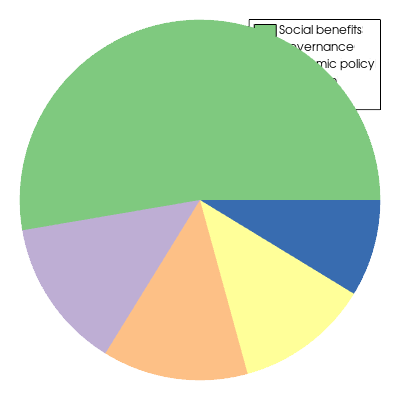

pyvista.ChartPie¶
- class ChartPie(data, colors=None, labels=None)¶
円チャートを描くための専用チャート．
- パラメータ
- dataarray_like
各円セグメントの相対的な大きさ
- colors :
listかtupleofcolor,optionalpython:list または color の python:tuple, optional このプロットに描かれた各パイセグメントに使用される色です．デフォルトは
Noneで，これはデフォルトの配色を使用します．- labels :
listかtupleofstr,optionalpython:list または python:str の python:tuple, optional チャートの凡例に表示される，描画された各パイセグメントのラベルです．デフォルトでは
[]です．
例
税金の使い道を示す円グラフを作成します．
>>> import pyvista >>> x = [128.3, 32.9, 31.8, 29.3, 21.2] >>> l = ["Social benefits", "Governance", "Economic policy", "Education", "Other"] >>> chart = pyvista.ChartPie(x, labels=l) >>> chart.show()
 メソッド
ChartPie.show([off_screen, full_screen, ...])このチャートを自作のプロッターに表示します．
チャートの表示を切り替えます．
アトリビュート
チャートの背景色を返すか設定します．
チャートの背景テクスチャーを返すか設定します．
チャートの境界線色を返すか設定します．
チャートの境界線スタイルを返すか設定します．
チャートの境界線幅を返すか設定します．
チャートの凡例の可視性を返すか設定します．
正規化された座標でチャートの位置を返す，または設定します．
このチャートに関連付けられた
PiePlotインスタンスを返します．正規化された座標でチャートのサイズを返す，または設定します．
チャートのタイトルを返すか設定します．
チャートの見え方を返すか設定します．